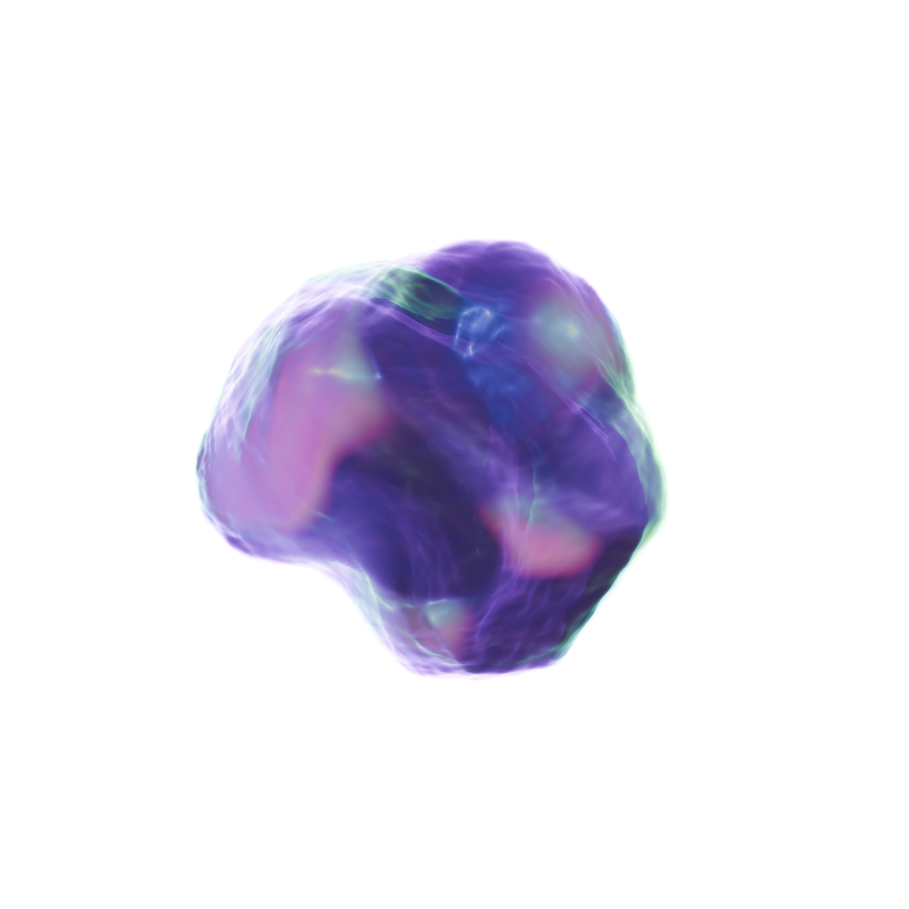
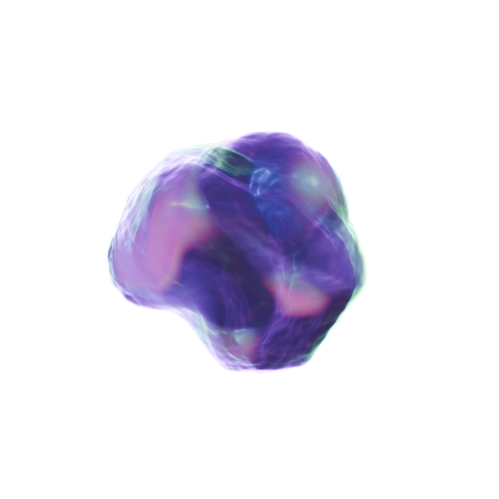

STORY
저에게 디자인은 영화에서 시작되었습니다. SF, 우주, 판타지 세계를 다룬 영화 속 VFX 장면들은 어린 시절의 저에게 가장 큰 영감을 주었습니다.
거대하고 환상적인 장면들을 보며 늘 설레었고 동시에 “영화처럼 상상하는 것을 현실로 만들 수 있을까”라는 생각을 하며 디자인의 꿈을 가지게 되었습니다.
처음에는 2D 그래픽 작업을 통해 기본적인 시각 언어를 익히고, 저의 다지인을 발견하는 시간이었습니다.
이후 상상을 더 입체적이고 몰입도 있게 표현해보고 싶어서 3D 작업으로 확장하게 되었습니다.
머릿속에만 있던 아이디어를 실제로 구현할 수 있어 더 깊이 빠져들게 되었습니다.
경험을 통해 단순히 영상으로만 끝내지 않고 관객이 직접 경험하고 상호작용하는 작업에 관심이 가기 시작하였습니다.
미디어 아트와 융합 예술에 매료되어 인터랙티브한 작업으로 이끌었습니다.
For me, design began with movies. The VFX scenes in films depicting sci-fi,
space, and fantasy worlds were the greatest inspiration of my childhood.
Seeing those vast, fantastical scenes always thrilled me, and at the same time,
I wondered, “Can I make what I imagine, like in movies, become reality?”
That's how I developed my dream of design. Initially,
it was a time to learn basic visual language through 2D graphic work and discover my own design style Later,
wanting to express my imagination in a more three-dimensional and immersive way,
I expanded into 3D work. Being able to actually implement ideas that had only existed in my head drew me in even deeper.
Through experience, I became interested in work that audiences could directly experience and interact with,
not just end with a video. Fascinated by media art and fusion art, this led me towards interactive work.
MISSION
현재 저에게 디자인은 다양한 경험을 하며 저만의 방법으로 디자인의 경계를 넘나들고 싶습니다.
단순히 보기 좋은 결과물을 넘어서 현실과 가상,
관객과 작품의 경계를 지우고 직접 체험하면서 상호작용을 하는 작품을 만든 것이 제가 앞으로 나아가고 싶은 방향입니다.
이 포트폴리오는 그러한 여정을 담은 기록입니다.
3D 작업물들은 제가 상상을 현실화하는 과정을 보여주며, 융합 예술에 대한 도전은 앞으로 나아가고자 하는 방향을 제시합니다.
저의 정체성과 색깔을 찾아가는 과정 속에서 저의 세계관을 만들어가고 있습니다.
Currently, design for me is about gaining diverse experiences and
crossing the boundaries of design in my own way.
Beyond simply creating visually pleasing outcomes,
my direction moving forward is to create works that erase the boundaries between reality and virtuality,
between audience and artwork, allowing direct experience and interaction.
This portfolio documents that journey.
My 3D works showcase the process of turning my imagination into reality,
while my exploration of fusion art points toward the direction I wish to pursue.
In the process of discovering my identity and unique style, I am building my own worldview.
 
